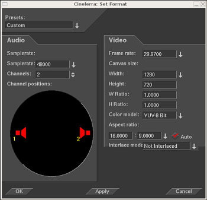

4. Proiektuaren atributuak
4.1 'Ezarri formatua' leihoa
Cinelerra-rekin erreproduzitzean, multimediako fitxategiek pista kopuru
zehatz bat dute, baita fotograma-tamaina eta lagin-tamaina zehatzak ere beste gauza
batzuen artean. Berdin dio multimediako fitxategiek zer atributu dituzten,
proiektuko atributuen arabera erreproduzituko baitira. Honela, audioaren fitxategiaren
lagin-tasa proiektuaren atributuaren desberdina bada, berriro eragingo zaio lagina.
Antzekoa gertatzen da aspektuarekin, bideoaren fitxategiaren fotograma-tamaina
proiektuaren atributuaren desberdina izanez gero bideoa fotograma beltz batean osatuko da,
bideoa moztu egingo da edo beltz koloreko ertzak aplikatuko zaizkio.
Proiektuaren atributuak Ezarpenak -> Ezarri formatua menuan doitzen dira, eta
modu laburrean Fitxategia -> Berria menuan. Proiektuaren ezarpenak
Fitxategia -> Berria menuan konfiguratzen baduzu denbora-lerro berri eta huts
bat sortuko da. Puntu honetan sortutako denbora-lerro bakoitzak ezarpen berdinak
erabiliko ditu. Ezarpenak -> Ezarri formatua menuan konfiguratzen baduzu,
denbora-lerroko multimedia aldatu gabe utziko da. Gainera, puntu honetan sortutako
denbora-lerro bakoitzak ezarpen berdinak erabiliko ditu.

'Ezarri formatua' leihoa
Lagin-tasa, fotograma-tasa eta fotograma-tamainaren ezarpenetaz gain
Cinelerra-k ohizkoak ez diren beste ezarpen batzuk erabiltzen ditu: adibidez,
kanalen posizioak, kolore-eredua, eta aspektu-erlazioa.
4.2 Aurrehautaketak
Hautatu zerrendako elementu bat proiektuaren ezarpen guztiak ezagunak diren estandarretako
batekin ezartzeko.
4.3 Audioaren atributuak
- Pistak
Proiektu berriaren audioaren pista kopurua ezartzen du.
Pista geroago gehitu edo kendu daitezkeen arren, aukera hauek erosotasunarengatik
eskaintzen dira hemen.
- Kanalak
Proiektu berriaren audioaren kanal kopurua ezartzen du.
Audioaren kanal kopuruak ez dauka pista kopuruaren berdina izan beharrik.
- Lagin-tasa
Audioaren lagin-tasa zehazten du. Proiketuaren lagin-tasak ez dauka kargatu duzun
multimediaren lagin-tasaren berdina izan beharrik. Multimedia berriro lagintzen da
proiektuaren lagin-tasarekin bat etortzeko.
- Kanalen posizioak
Kanalen posizioen trepetan bistaratzen dira unean gaitutako audioaren kanalak
eta beraien erabiltzailearen interfazeko kutxetako posizioak.

Kanalak zenbatuta daude. Errendatzean 1. kanalaren irteera
fitxategiaren irteeraren aurreneko pistan edo soinu-txartelaren aurreneko
kanalean errendatuko da. Beste kanalak zenbatutako irteerako kanaletan errendatuko
dira hurrenez hurren.
Kanal bakoitzari dagokion audioaren irteera trepetako zein lekuan kokatzen den
adierazten du audioaren kanalen posizioak. Audioaren irteeraren arteko tartea zenbat
eta txikiagoa izan, orduan eta seinale gehiago izango du bozgorailu horrek.
Egin klik bozgorailu baten ikonoan eta arrastatu audioaren kanala posizioz aldatzeko.
Bozgorailuak edozein orientazio eduki dezakete. Audioaren kanal kopuru bakoitzak
bozgorailuen antolaketa desberdina dauka, normalean kanal kopuru desberdinek ez
dutelako behar antolamendu berdinik.
Kanalen posizioen ezarpenek ez dute eragiten derrigorrez irteeran.
Egin klik bozgorailuaren ikono batean eta arrastatu kanalaren posizioa aldatzeko.
Erosotasunagatik soilik agertzen denez, bi kanal baino gehiago erabiltzean,
panoramikoak kontrolatuko ditu denbora-lerroan hauen artean desberdintzeko.
Kanal desberdinak nahiko gertu jar daitezke irteera berdina lortzeko.
4.4 Bideoaren atributuak
- Pistak
Proiektu berriari ezartzen zaizkion bideo-pista kopurua zehazten du.
Pista geroago gehitu edo kendu daitezkeen arren, aukera hauek erosotasunarengatik
eskaintzen dira hemen.
- Fotograma-tasa edo Fotog.-tasa
Bideoaren fotograma-tasa ezartzen du. Proiektuaren fotograma-tasa eta kargatu duzun banakako
multimediako fitxategiaren fotograma-tasak ez daukate berdina zer izan beharrik.
Multimediaren fotogramak berriro landuko dira proiektuko fotograma-tasarekin bat etortzeko.
- Oihalaren tamaina
Bideoaren irteeraren tamaina ezartzen du. Gainera, pista bakoitzak bere tamaina propioa
eduki dezake. Hasiera batean Berria elkarrizketa-koadroak bideoaren pistak sortzen ditu,
non beraien tamainak bideoaren irteerarekin bat etortzen diren. Bideoaren pisten tamainak
geroago alda daitezke bideoaren irteera aldatu gabe.
- Aspektu-erlazioa edo Erlazioa
Aspektu-erlazioa ezartzen du. Aspektu-erlazioa bideoaren irteerari
aplikatzen zaio. Aspektu-erlazioa honako formularen emaitzaren desberdina izan daiteke:
h / b (pixel horizontalak zati pixel bertikalak). Aspektu-erlazioa eta arestiko formularen
emaitza desberdinak balira irteera pixel ez-karratuekin kaleratuko da.
- Aspektu-erlazio automatikoa
Aukera hau gaitzen bada, Berria elkarrizketa-koadroak berriro kalkulatuko du
Aspektu-erlazioa edo Erlazioa ezarpena emandako Oihalaren tamainan oinarrituz.
Honek pixelak beti karratuak izango direla ziurtatzen du.
- Kolore-eredua
Goitibeherako zerrendan hautatutako bideoaren kolore-ereduan gordeko da
proiektua.
Kolore-eredua oso garrantzitsua da bideoa erreproduzitzean, bideoa
oso motela izatearen oztopoa du. Nahiz eta nabarmena ez izan, audioaren bitartekoak
disko gogorreko audioaren eta erreproduzitzen den audioaren baino informazio gehiago dauka.
Audioak beti erabiltzen du bitarteko banda-zabalera handiena, azkarrena baita.
Bideoaren bitartekoak beharrezko kalitatearen gutxieneko datu kopurua erabili behar du,
motela baita. Hala ere, gordetako bideoa eta erreproduzitzen den bideoa baino kolore-ereduaren banda-zabalera altuagoa erabili behar du bideoaren bitartekoak.
Honek prozesamendu gehiago eskatzen du, jatorrizko datuak ahalik eta gutxien
hondatzeko.
Bideoa kolore-eredu batekin gordetzen da disko gogorrean, normalean eratorritako YUV
eredua. Erreproduzitzean, Cinelerra-k fitxategi-formatutik zuzenean deskonprimitzen du
irteerako gailuaren formatura. Efektuak prozesatzen badira, Cinelerra-k aurrenik
bitarteko kolore-eredura deskonprimitzen du bideoa, eta gero irteerako gailuaren
formatura bihurtzen du. Bitarteko kolore-ereduaren hautapenak zehazten du efektuen abiadura
eta zehaztasuna.
Cinelerra-ren kolore-ereduak osagaiak paketatzeko ordena eta osagai bakoitzeko
bit kopurua erabiliz deskribatzen dira. Paketatze ordena ezkerretik agertzen hasten da,
eta bit kopurua eskuinean.
- RGB-888
Gorria (R), berdea (B) eta Urdina (B) kanalek 8 bit erabiltzen dute. Kasu honetan
ez da alfa kanalik erabiltzen. Barruti dinamiko baxua duten konprimitu gabeko
multimedian erabili ohi da.
- RGBA-8888
8 bit-eko GBU (RGB) kolore-ereduari alfa kanala gehitzen dio.
Hainbat pista gainjartzeko erabiltzen da.
- YUV-888
Y, U eta V-rentzako 8 bit esleitzen ditu. Barruti dinamiko baxuko eragiketetan
erabiltzen da, non multimedia YUV kolore-espazioarekin konprimitzen den.
Multimedia gehienak YUVekin konprimituta egon ohi dira, horrela bideoak azkar prozesatzen dira
gutxieneko kolore galerarekin.
- YUVA-8888
YUV kolore-ereduari alfa kanala esleitzen zaio gardentasuna izateko.
- RGB-Float
32 bit mugikorra esleitzen zaie gorria (R), berdea (G) eta urdina (B) kanalei,
ez dauka alfa kanalik ordea.
Gardentasunik gabeko barruti dinamiko altua prozesatzeko erabiltzen da.
- RGBA-Float
RGB mugikorrari 32 bit-eko mugikorreko alfa kanala gehitzen dio.
Gardentasuna duen barruti dinamiko altua prozesatzeko erabiltzen da.
Alfa kanalei eragiten dien efektuetan erabiltzeko alfa kanala duen kolore-eredua
hautatu behar da. Honakoak dira: RGBA8888, YUVA8888, eta RGBA mugikorra.
4 kanaletako kolore-ereduak 3 kanaletakoak baino motelagoak dira, RGBA mugikorra
izanik motelena. Efektu batzuk, iraungitzea bezalakoak, alfa kanalen inguruan egiten dute
lan, beste batzuk berriz, gako-kromatikoa bezalakoak, alfa kanala behar dute
edozer gauza egiteko. Burutazio ona da alfa kanalik gabeko efektuekin probak egitea,
alfa kanala ezarri eta gauzak moteldu baino lehenago.
Konprimitutako metrajeak erabiltzean YUV kolore-ereduak RGB baino azkarragoak izan ohi dira.
Gainera, RGB kolore-eredua baino kolore gutxiago hondatzen dituzte.
JPEG edo MPEG gisa gordetako metrajea hainbat aldiz prozesatzen bada RGB moduan,
koloreak iraungitu egingo dira, YUV ereduarekin ordea ez dira iraungitzen..
Barruti dinamiko altuekin urteetan lan egiteak koma mugikorreko RGB eredua egokiena
dela erakutsi du barruti dinamiko altuekin lan egiteko. Iraganean 16 bit-eko
osokoak erabiltzen ziren, oso motela eta galera askokoa izanik.
RGB mugikorrak ez du informaziorik galtzen metrajeko YUV iturburuarekin lan egitean,
eta gainera, %100 baino distira gehiago onartzen du. Argi ibili zenbait efektuekin,
histograma bezalakoekin, oraindik ere %100-etik gorakoak mozten baitituzte
koma mugikorrean lan egitean.
This document was generated by Raffaella Traniello on December, 31 2007 using texi2html 1.76.